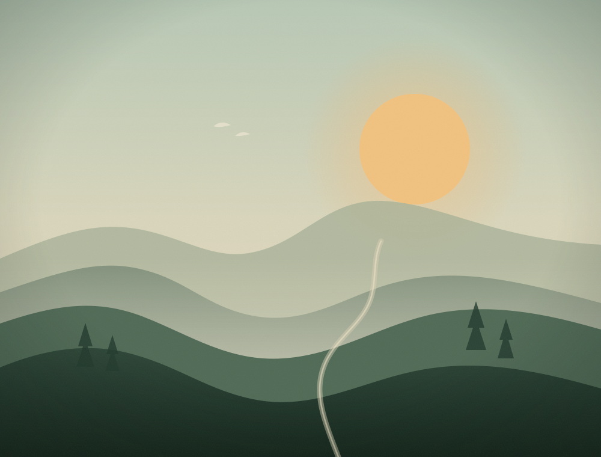
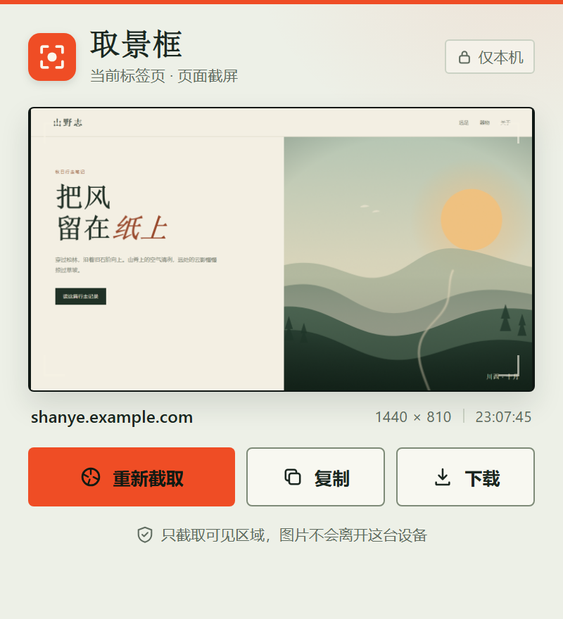

打开即取景
点击扩展图标，当前标签页的可见区域会立即截取。不用选择模式，也不用拖拽选区。
Chrome / Edge 页面截屏扩展
取景框是一款安静的浏览器扩展。点一下，它截下你眼前可见的网页，把预览、复制和下载放在手边。
免费使用，无需登录，截图不离开本机

山野志 秋日行走笔记
点一下，眼前这一屏就是一张 PNG。
为什么是取景框
不接管页面，不改变你的浏览习惯。只在你想留住画面时出现，做完就退场。
点击扩展图标，当前标签页的可见区域会立即截取。不用选择模式，也不用拖拽选区。
预览即时生成。一键复制 PNG，或下载成带域名与时间戳的文件，方便归档和发送。
不读取页面内容，不接入任何服务器。截图从浏览器到剪贴板或下载目录，途中不出门。
实际界面
没有账户，没有侧边栏，也没有多余设置。打开就是唯一需要的操作。
activeTab / clipboardWrite安装
取景框当前通过开发者模式安装，不需要构建工具或命令行。Chrome 与 Edge 操作一致。
下载取景框 ZIP，解压后会得到 viewfinder-extension 文件夹。请在解压后的文件夹中加载，不要直接选择压缩包。
在地址栏输入对应浏览器的扩展地址，然后按下回车。
chrome://extensions/
edge://extensions/
开启页面上的“开发者模式”，点击“加载已解压的扩展程序”，选择刚才的 viewfinder-extension 文件夹。完成后，把取景框固定到工具栏。
fd88026d89ad18d2fcc045515c90230ca5364d42af3be090368c3f1bc9b162af
常见问题
关于截图范围、隐私和安装的几个简短回答。
不会。取景框只截取当前标签页中你实际看到的可见区域，不会滚动页面，也不会拼接长图。需要滚动长截图时，请使用专门的长截图工具。
不会。扩展没有接入任何服务器，也不申请主机权限或网络权限。截图在浏览器内生成，只交给你选择的剪贴板或下载目录。
浏览器内置页面（如 chrome://、edge://）、扩展商店和部分受 DRM 保护的内容禁止扩展捕获画面。切回普通网页即可重试。
支持 Chrome 和 Edge 等 Chromium 浏览器，建议使用 102 及以上版本。两个浏览器使用同一个扩展包。
请先确认弹窗处于焦点状态，再点击复制；也可以直接使用下载按钮保存 PNG。如果浏览器策略限制了剪贴板访问，下载会是更稳妥的方式。